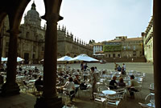
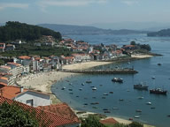
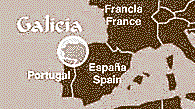

|
ALBARIÑO WINES FROM RIAS BAIXAS, SPAIN
In
the northwest corner of Spain lies a green, hilly land with a moist,
mild climate where grapes grow well and even citrus fruits thrive.
This is Galicia, home of the city of Santiago de Compostela,
destination of millions of pilgrims since the middle ages, who still
come today to admire the cathedral of St. James and to be awed by
the history and spirit of the place.
The land is also blessed with natural wonders. Nearby is Cape
Finisterre, or "lands end", the westernmost point in Spain, which
was once considered the end of the world. One of the more impressive
elements of this lush land is the rías, which are deep, wide inlets
of water encroaching many miles inland from the Atlantic Ocean along
the coast. The southern group of these rías are known in Galician as
the Rías Biaxas. To the delight of wine lovers, these rías are
surrounded by fine vineyard land. Since the rías are such an
important element in the wine region, Rías Baixas was also taken as
the name for the region's denomination of origin, which was awarded
in 1988.
Perhaps
the major reason Rías Baixas was believed to merit its own D.O. is
the Albariño grape variety, a native grape which is grown only in
this region of the world. While other white grape varieties are
grown here and are sometimes blended with Albariño grapes, these
wines cannot be labeled Albariño, since the wine must contain 100%
Albariño to be labeled as such. Indeed, it is the Albariño variety
which has truly put Rías Baixas on the world's wine map. This grape
variety, despite its low yields, difficulty of cultivation, and
delicate, expensive grapes, produces exceptional wines. Albariño
wines are elegant, crisp, dry and aromatic, with a unique and
pleasing flavor.
Until very recently, relatively little Albariño wine was produced,
and it is only within the last decade or so that this wine has
become available to any significant extent outside Galicia. Since
the granting of D.O. status, however, numerous bodegas have been
founded and existing ones have invested seriously in improving their
equipment, vineyard management, winemaking and marketing. These
changes have resulted not only in more wine, but in better,
consistently superior wines.
There are five subzones within the D.O.

. On the coast around Cambados is the Val do Salnés.
. In the corner where the Portuguese border meets the sea is O
Rosal.
. Inland, along the course of the river Miño, lies the Condado do
Tea.
. Together the Ría of Vigo is the subzone of Soutomaior.
. And along the river Ulla lies the Ribeira do Ulla.
Albariño wines have been nicknamed the Wines of the Sea, based on
their derivation from coastal vineyards and on their compatibility
with seafood. For the Rías Baixas are also famous for their
wonderful seafood. Fishing villages line the rías and ocean coasts,
and fishing is a major industry. It is a delightful experience for
locals and visitors alike to spend a sunny afternoon at a charming
little outdoor cafe in a Rías Baixas fishing village, enjoying a
plate of fresh seafood and a bottle of crisp, dry Albariño wine.
Albariño wines enhance any occasion and any type of cuisine. Try an
Albariño soon, as an aperitif or with your next seafood dinner.
Albariño wines are now available in many markets in the U.S..
|